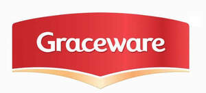

Trade Mark Journal No.2025/031 1 August 2025
UK00004238574 23 July 2025 (21)

- Class 21
- Oven-to-table tableware; Dinnerware; Tableware; Tableware, cookware and containers; Dinnerware of porcelain; Tableware of porcelain; Stemware; Trivets [table utensils]; Bone china tableware [other than cutlery]; Ceramic tableware; Dishware; Coasters (tableware); Drinkware; Glass tableware; Bakeware; Cookware and tableware, except forks, knives and spoons; Glassware; Cutlery trays; Scoops [tableware]; Tableware, other than knives, forks and spoons; Beverageware; Cookware; Spatulas [kitchen utensils]; Decorative chinaware; Tableware, except forks, knives and spoons; Platters; Trivets; Mixing spoons [kitchen utensils]; Kitchen utensils; Beverage glassware; Tenderizers [kitchen utensils]; Decorative porcelain ware; Turners (kitchen utensil); Dishes [household utensils]; Serving utensils [pastry servers]; Molds [kitchen utensils]; Pewter goblets; Baking utensils; Jewelry dishes; Serving platters; Tea services [tableware]; Picnic crockery; Serving utensils [pie servers]; Crockery; Chinaware; Baking dishes made of porcelain; Aluminium bakeware; Moulds [kitchen utensils]; Basting spoons [cooking utensils]; Porcelain ware; Coffee services [tableware]; Utensil jars; Cookware, except forks, knives and spoons; Holloware; Serving scoops [household or kitchen utensil]; Griddles [cooking utensils]; Baking dishes made of earthenware; Decorative plates; Plastic plates [dishes]; Ceramic hollowware; Compostable bowls; Kitchen utensils of silicon; Casseroles [dishes]; Wire baskets [cooking utensils]; Crockery made of porcelain; Goblets; Egg separators [kitchen utensils]; Decorative china; Dishes; Cookware [pots and pans]; Ovenware; Serving dishes; Glass dishes; Crystal [glassware]; Household or kitchen utensils; Compostable plates; Cruets; Grills [cooking utensils]; Aluminium moulds [kitchen utensils]; Cooking utensils; Porcelain mugs; Mugs of porcelain; Insulated lids for plates and dishes; Graters [household utensils]; Aluminium cookware; Painted glassware; Glassware (Painted -); Serving platters of precious metal; Baking dishes; Bowls for floral decorations; Non-electric griddles [cooking utensils]; Griddles [non-electric cooking utensils]; Earthenware mugs; Steamers [cookware]; Basting spoons, for kitchen use; Spoons (Basting -), for kitchen use; China ornaments; Cutlery rests; Kitchen graters; Dessert plates; Porcelain cake decorations; China mugs; Mugs of china; Tea services in the nature of tableware; Spatulas for kitchen use; Baking dishes made of glass; Gratin dishes; Skewers (cooking utensil); Plates; Glass plates; Table plates; Plastic plates; Commemorative plates; Souvenir plates; Paper plates; Plates (Paper -); Collector plates; Cake plates; Biodegradable plates; Disposable table plates; Table plates (Disposable -); Plate glass for cars; Plates for hors d'oeuvre; Plate glass being unworked; Dining plates of silica gel; Plastic cups; Cups of paper or plastic; Plastic bottles; Plastic buckets; Plastic bowls [basins]; Plastic bowls [household containers]; Tablemats of plastic; Plastic coasters; Plastic ice cube moulds; Slotted spoons; Plastic juice box holders; Plastic funnels; Plastic water bottles; Planters of plastic; Cardboard cups; Plastic water bottles [empty]; Mugs made of plastic; Juice box holders made of plastic; Plastic lids for plant pots; Plastic bag holders for household use; Jam spoons; Bottle baskets coated with precious metal; Pizza tray stands; Cake trays; Meal trays; Serving trays; Plastics trays for use as litter trays for cats; Trays [household]; Butlers' trays; Serving trays of precious metal; Baking trays made of aluminium; Cabarets [trays]; Serving trays, not of precious metal; Chip pan baskets; Boxes of glass; Trays of paper, for household purposes; Trays for domestic use; Trays for household purposes.
MOATISAM JAVED